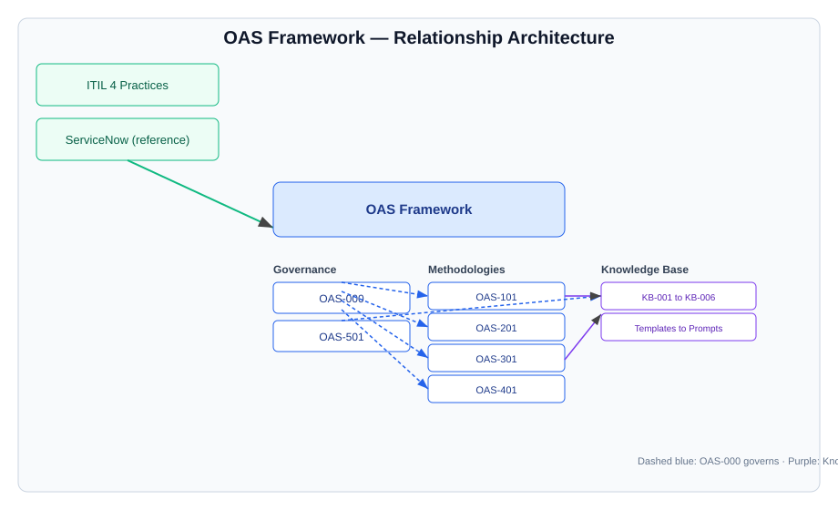

Operational Analysis Standard
Major Incident Analysis in Context
How OAS-201 Major Incident Communications connects to every other standard
Release 1.2.1
ITIL 4-aligned
ServiceNow reference
Evidence-based
What is OAS? (through the Major Incident lens)
A governed library of evidence-based analysis standards for operational records.
It complements ITIL & ServiceNow — it does not replace them.
Every standard inherits OAS-000 and the evidence-first principle.
Today's focus:
OAS-201 — Major Incident Communications
evaluates how an incident was communicated — not the technical fix.
…and how it connects to OAS-000, 101, 301, 401, 501 and the Knowledge Base.
The OAS Library at a glance

6 standards + a derived Knowledge Base (KB-001 … KB-006). OAS-000 governs all.
Where Major Incident lives
graph LR
INC[Incident] --> MI[Major Incident]
MI --> CHG[Remediation Change]
MI --> PRB[Problem]
MI --> KA[Knowledge]
A Major Incident is declared from an Incident, frequently drives a Problem and remediation Changes, and generates knowledge.
OAS-201 — Major Incident Communications (the focus)
Purpose: evaluate effectiveness, timeliness, consistency, clarity & governance of communications.
Scope: operational updates, executive, customer, vendor, bridge, MIM handovers.
Does: assess how the incident was communicated.
Does not: re-do technical root-cause (OAS-301) or incident response (OAS-101).
OAS-201 — 8-phase methodology
flowchart TD
A[1 Context] --> B[2 Comms Timeline]
B --> C[3 Quality]
C --> D[4 Timeliness]
D --> E[5 Stakeholders]
E --> F[6 MIM Handovers]
F --> G[7 Governance]
G --> H[8 Effectiveness]
Relationship map — Major Incident at the centre
graph TD
MI[OAS-201 Major Incident Comms] --> G[OAS-000 Governance]
MI --> I[OAS-101 Incident]
MI --> P[OAS-301 Problem]
MI --> C[OAS-401 Change]
MI --> K[OAS-501 Knowledge]
MI --> KB[Knowledge Base KB-001..006]
G -.governs.-> MI
↔ OAS-000 — Governance (the foundation)
Inherits: Evidence First · Objectivity · Traceability · Transparency · Fact/Opinion separation.
Uses: Evidence Hierarchy (7 tiers), Evidence States, Evidence Classification, Confidence Model (H/M/L/U).
Lifecycle: Collect → Inventory → Classify → Analyse → Correlate → Timeline → Gaps → Confidence → Assess → Summarise.
Rule: no methodology may contradict OAS-000.
↔ OAS-101 — Incident Analysis
| Dimension | OAS-101 (Incident) | OAS-201 (Major Incident Comms) |
|---|
| Question | What happened & how was it handled? | How was it communicated? |
| Output feeds | Operational facts, timeline, response | Stakeholder narrative & cadence |
| Link | Primary record | Assesses comms about the same event |
OAS-101 establishes the facts; OAS-201 assesses how those facts were communicated. Their Related-Record assessment cross-links them.
↔ OAS-301 — Problem Analysis
A Major Incident often spawns a Problem (PRB).
OAS-201's SITREPs & narrative feed OAS-301's investigation context.
OAS-301 validates root cause; OAS-201 confirms stakeholders were informed during.
A Post Incident Review (PIR) ties both together.
↔ OAS-401 — Change Analysis
Remediation Changes (401B) frequently follow a Major Incident.
OAS-401 assesses planning, risk, rollback symmetry & validation.
OAS-201 assesses comms during/after the change.
Consistency check: did communications reflect the change's actual outcome (not just its closure)?
↔ OAS-501 — Operational Knowledge
graph LR
MI[Major Incident Lessons] --> KA[Knowledge Article]
MI --> RB[Runbook]
MI --> KE[Known Error Article]
KA --> O5[OAS-501 governs quality + lifecycle]
Major Incident lessons become Knowledge Articles, Runbooks & Known Error Articles — governed for quality by OAS-501. Closed loop: analysis → knowledge → better future response.
↔ Knowledge Base (KB-001 … KB-006)
graph TD
O5[OAS-501] --> K1[KB-001 Templates]
O0[OAS-000] --> K2[KB-002 Checklists]
O2[OAS-201] --> K2
O0 --> K3[KB-003 Reports]
O2 --> K4[KB-004 Examples]
O0 --> K5[KB-005 References]
O0 --> K6[KB-006 Prompts]
O2 --> K6
OAS-201 contributes: comms runbook templates (KB-001), its QA checklist (KB-002), report templates (KB-003), worked examples (KB-004) & AI prompts (KB-006).
Evidence & Confidence in MI communications
Hierarchy: Primary MI record > related > vendor > monitoring > email > user > analyst notes.
States: classify every comms artefact — Present / Referenced / Missing / Not Applicable.
Confidence: rate every comms finding — High / Moderate / Low / Unknown.
AI guardrails (OAS-000 §14): no invented evidence, no concealed uncertainty, human validation mandatory.
Worked example — MI000456 (Payment gateway)
| Stakeholder | Evidence | Assessment |
|---|
| Operational | Bridge every 30 min | Strong |
| Executive | SITREP 03:00 / 05:00 / 07:00 | Adequate cadence |
| Customer | Update 03:10 → next 06:45 | 3h35m gap during impact — weakness |
| Vendor | Escalation 03:20 | Effective |
Lesson: define a max customer-comms silence window during active SEV-1. Confidence: High.
Analyst quick start — Major Incident
- Open OAS-201; read OAS-000 first if new.
- Build an Evidence Manifest; classify every comms artefact.
- Reconstruct the communication timeline.
- Assess quality & timeliness per stakeholder.
- Evaluate MIM handover continuity only.
- Assign confidence to each finding.
- Complete the QA checklist (KB-002).
- Capture Lessons for Communication; feed OAS-501 / KB.
Key takeaways
OAS-201 is the communications lens inside a connected ecosystem.
All standards inherit OAS-000; none contradict.
The Knowledge Base is derived from the standards.
Everything is evidence-first, confidence-rated, traceable.
References & closing
Standards: OAS-000 Governance · OAS-101 Incident · OAS-201 Major Incident Comms · OAS-301 Problem · OAS-401 Change · OAS-501 Knowledge.
Knowledge Base: KB-001 Templates · KB-002 Checklists · KB-003 Reports · KB-004 Examples · KB-005 References · KB-006 Prompts.
Release: 1.2.1 · Alignment: ITIL 4 · Reference platform: ServiceNow.
Evidence over opinion Governance before methodology Platform-agnostic, ServiceNow by reference